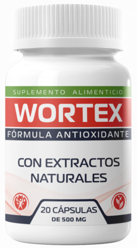

Recupera tu bienestar y limpieza digestiva de forma natural con Wortex
En México, mantener un sistema digestivo limpio y protegido es fundamental para disfrutar de una vida llena de energía. Muchas veces, el cansancio constante, las molestias estomacales y la falta de vitalidad son señales de que nuestro cuerpo necesita una depuración profunda.
Es por eso que miles de familias están recurriendo a Wortex, un suplemento natural diseñado para apoyar la desintoxicación del organismo y fortalecer las defensas de adentro hacia afuera.

¿Qué es Wortex y para qué sirve exactamente?
Wortex es una fórmula avanzada creada a partir de extractos botánicos de alta pureza. Su función principal es crear un ambiente desfavorable para agentes externos indeseados en el tracto digestivo, promoviendo una limpieza natural y suave.
A diferencia de los químicos agresivos, Wortex trabaja en armonía con tu flora intestinal. Su uso regular no solo ayuda a purificar el organismo, sino que también favorece una mejor asimilación de nutrientes, devolviéndote la energía que necesitas en tu día a día.
Los principales beneficios de elegir Wortex:
- Desintoxicación Profunda: Ayuda a limpiar el tracto digestivo de impurezas.
- Protección Familiar: Ingredientes seguros ideales para el cuidado del hogar.
- Impulso de Energía: Al mejorar la digestión, reduce la sensación de fatiga crónica.
- Fórmula 100% Natural: Acción efectiva sin causar molestias estomacales.
El poder de la naturaleza respaldado por expertos
El éxito de Wortex en el mercado mexicano se debe a su rigurosa selección de ingredientes activos, conocidos tradicionalmente por sus propiedades purificantes y protectoras. Especialistas en bienestar recomiendan realizar una limpieza periódica para asegurar que el sistema inmunológico funcione al máximo de su capacidad.
Preguntas Frecuentes sobre Wortex en México
¿Cuánto tiempo tarda en hacer efecto?
La mayoría de los usuarios reportan sentirse más ligeros y con mayor energía durante las primeras dos semanas de uso constante, a medida que el cuerpo completa su ciclo de limpieza natural.
¿Cómo funciona la entrega y el método de pago?
Para tu total seguridad y comodidad, en México operamos con la modalidad de Pago Contra Entrega. Esto significa que haces tu pedido en línea de forma segura y solo pagas en efectivo cuando el repartidor te entrega el producto en tus manos. ¡Sin riesgos ni tarjetas!